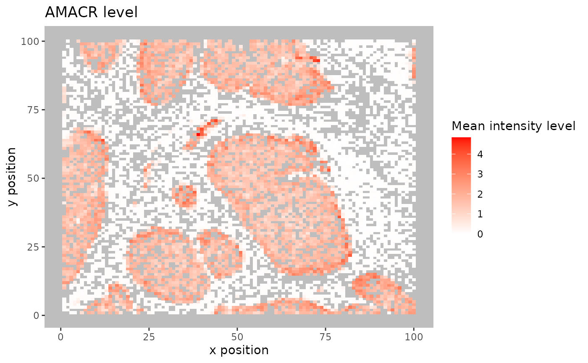
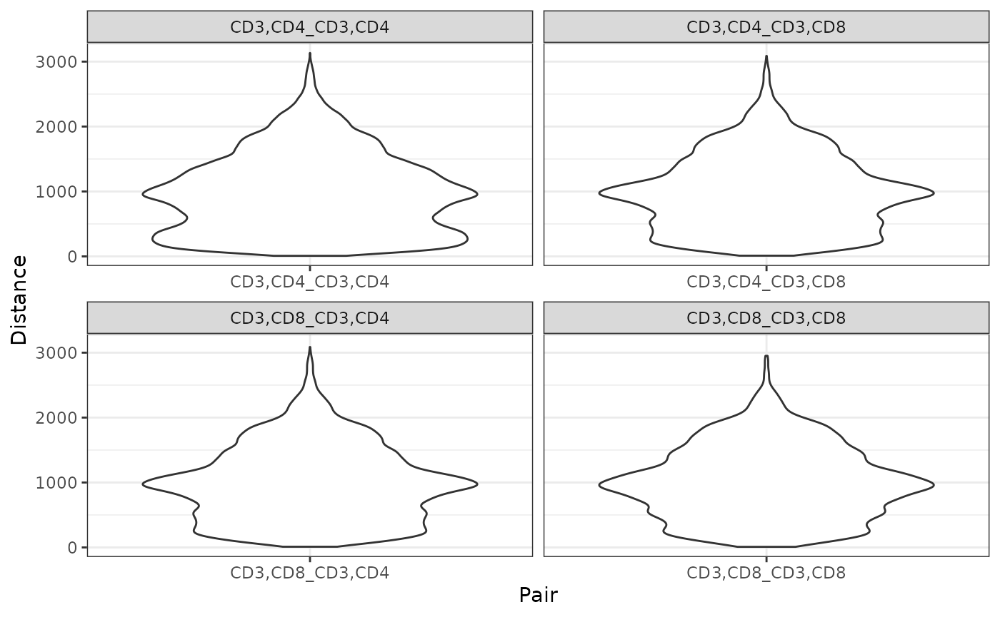
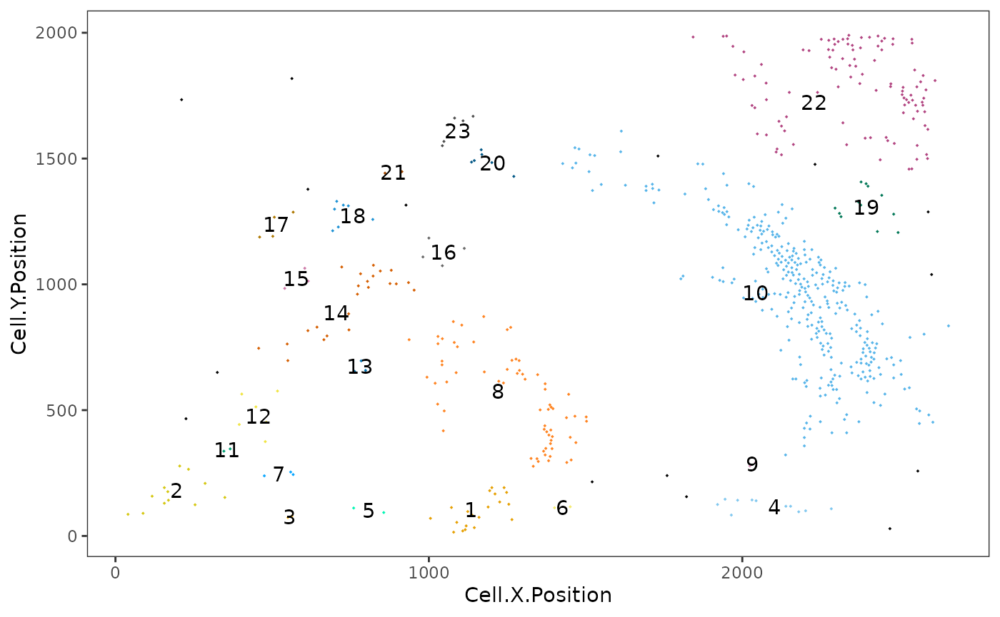

Overview of the SPIAT package
Anna Trigos, Tom Yang, Yuzhou Feng, Volkan Ozcoban, Maria Doyle
29 August 2020
Source:vignettes/introduction.Rmd
introduction.RmdIntroduction
SPIAT (Spatial Image Analysis of Tissues) is an R package with a suite of data processing, quality control, visualization, data handling and data analysis tools (Yang et al. 2020). SPIAT is directly compatible with Opal multiplex immunohistochemistry images analysed through the HALO and InForm analysis software, but its intuitive implementation allows use with a diversity of platforms.
The Opal multiplex immunohistochemistry staining protocol enables 6-8 tissue markers to be used simultaneously on a single slide. It is suitable for use with formalin fixed paraffin embedded (FFPE) tissue sections, so it is also of relevance for clinical practice. The fluorescence of each marker is measured through imaging, and each cell is assigned an X,Y coordinate of its location. In effect this provides single-cell resolution. The fluorescence intensity of individual markers are then combined to identify the phenotype of the cells in the tissue.
SPIAT includes novel algorithms for the identification of cell clusters, cell margins and cell gradients, the calculation of neighbourhood proportions, and algorithms for the prediction of cell phenotypes in tissue images. SPIAT also includes speedy implementations of the calculation of cell distances and detection of cell communities. An overview of the functions available is shown in the figure below.

Setting up the data
First we load the SPIAT library.
# load library library(SPIAT)
We can use format_image_to_sce to format raw data for SPIAT, as shown in the commented out code below. format_image_to_sce creates a SingleCellExperiment object. It requires 4 things:
-
format: INFORM or HALO -
image: path to the raw InForm or HALO image data file -
markers: names of markers used in the OPAL staining. These must be in the same order as the marker columns in the input file, and for InForm must match the name used in the input file.
-
locations: locations of the markers either Nucleus, Cytoplasm or Membrane. These must be in the order of the markers. (Alternatively the names of the columns of interest can be specified withintensity_columns of interest, withdye_columns of interestalso required for HALO)
Images must have been cell segmented and cells phenotyped using HALO or InForm software, although SPIAT offers the option of calling phenotypes based on marker levels and marker combinations. See Phenotype prediction check section.
# raw_inform_data <- "S6_[49209,17530]_cell_seg_data.txt"
# markers <- c("DAPI","CD3","PDL-1","CD4","CD8","AMACR")
# locations <- c("Nucleus", "Cytoplasm", "Membrane", "Cytoplasm", "Cytoplasm", "Cytoplasm")
# formatted_image <- format_image_to_sce(
# format="INFORM",
# image=raw_inform_data,
# markers=markers,
# locations= locations)
#)In this vignette we will use data that’s already formatted for SPIAT, formatted_image which we can load with data.
data("formatted_image")
This is SingleCellExperiment format where here assay stores the intensity level of every marker (rows) for every cell (columns), and colData stores the phenotype, x and y coordinates and cell properties. If InForm format, the cell properties are Cell.Area, Nucleus.Area, Nucleus.Compactness, Nucleus.Axis.Ratio, and Cell.Axis.Ratio. If HALO format, the cell properties are Cell.Area, Nucleus.Area, Cytoplasm.Area and Membrane.Perimeter.
assay(formatted_image)[1:5, 1:5]
## Cell_2 Cell_3 Cell_4 Cell_5 Cell_6
## DAPI 17.588 21.262 18.951 18.631 19.210
## CD3 0.229 0.206 0.226 0.212 0.206
## PDL-1 0.117 0.103 0.126 0.091 0.093
## CD4 1.188 0.924 1.367 1.266 1.464
## CD8 0.087 0.053 0.037 0.046 0.043colData(formatted_image)[1:5,]
## DataFrame with 5 rows and 8 columns
## Phenotype Cell.X.Position Cell.Y.Position Cell.Area Nucleus.Area
## <character> <integer> <integer> <integer> <integer>
## Cell_2 AMACR 171 22 464 177
## Cell_3 AMACR 184 38 553 212
## Cell_4 AMACR 201 52 462 239
## Cell_5 AMACR 219 63 876 451
## Cell_6 AMACR 231 77 601 301
## Nucleus.Compactness Nucleus.Axis.Ratio Cell.Axis.Ratio
## <numeric> <numeric> <numeric>
## Cell_2 0.54 1.84 1.00
## Cell_3 0.51 1.92 1.21
## Cell_4 0.53 1.47 1.09
## Cell_5 0.53 1.19 1.34
## Cell_6 0.61 1.02 1.49Splitting images
In the case of large images, or images where there are two independent tissue sections, it is recommended to split images into sections defined by the user. This can be performed with image_splitter. It can also plot the different combinations of markers within the image segments.
split_image <- image_splitter(formatted_image, number_of_splits=3, plot = FALSE)
Quality control
We can check what phenotypes are present in the image data with print_phenotypes.
print_phenotypes(formatted_image)
## [1] "AMACR" "CD3,CD4" "CD3,CD8" "PDL-1"These phenotypes are determined from individual markers like AMACR or combinations of markers like CD3 and CD4. The phenotypes in this example data can be interpreted as follows:
- AMACR = prostate cancer cells
- CD3,CD4 = helper T cells
- CD3,CD8 = cytotoxic T cells
- PDL-1 = immune checkpoint cells
AMACR identifies which cells in the image are prostate cancer cells. CD3,CD4 and CD3,CD8 which types of T cells (immune cells) are present, and PDL-1 is used to help determine if the cancer may benefit from immunotherapy treatment.
Cell proportions/percentages
We can obtain the number and proportion of each cell phenotype with calculate_cell_proportions. We can use reference_celltypes to specify celltypes to use as the reference. For example, “Total” will calculate the proportion of each phenotype against all cells. “CD3” will calculate the proportion of each CD3-containing phenotype against all CD3 cells. We can exclude any celltypes that are not of interest e.g. “OTHER” with celltypes_to_exclude.
p_cells <- calculate_cell_proportions(formatted_image, reference_celltypes=c("Total", "CD3")) p_cells
## Cell_type Number_of_celltype Reference Number_of_reference Proportion
## 1 AMACR 4446 Total 5101 0.87159381
## 2 CD3,CD4 513 Total 5101 0.10056852
## 3 CD3,CD8 138 Total 5101 0.02705352
## 4 PDL-1 4 Total 5101 0.00078416
## 5 CD3,CD4 513 CD3 651 0.78801843
## 6 CD3,CD8 138 CD3 651 0.21198157
## Percentage Proportion_name
## 1 87.159381 AMACR/Total
## 2 10.056852 CD3,CD4/Total
## 3 2.705352 CD3,CD8/Total
## 4 0.078416 PDL-1/Total
## 5 78.801843 CD3,CD4/CD3
## 6 21.198157 CD3,CD8/CD3To visualize the phenotype proportions as barplots we can use plot_cell_percentages.
plot_cell_percentages(p_cells)

We may see incorrect phenotypes present in the input data. For example, cells might be incorrectly assigned a phenotype such as “AMACR,CD3”, both a tumour cell (AMACR) and an immune cell phenotype (CD3), which is biologically implausible. Incorrect cell phenotypes may be present due to low cell segmentation quality, antibody ‘bleeding’ from one cell to another or inadequate marker thresholding.
We can use marker_permutation to help identify if incorrect cell phenotypes are present. This permutes the marker labels of cells to create a null distribution, and then calculates the empirical p-value of whether an image is enriched or depleted in a particular combination of markers. A low P value for Depletion.p suggests the phenotype is unreliable. However, it is not absolute and it is recommended to review the results.
# permute marker labels of cells sig <- marker_permutation(formatted_image, num_iter = 100) # sort by Observed_cell_number sig.sorted <- sig[order(-sig$Observed_cell_number), ] # take a look head(sig.sorted)
## Percentage_of_occurrence Observed_cell_number
## AMACR 100 4446
## CD3,CD4 100 512
## CD3,CD8 86 138
## PDL-1 30 4
## CD3 100 0
## CD4 100 0
## Average_bootstrap_cell_number Enrichment.p Depletion.p
## AMACR 3392.39 0.01 1.00
## CD3,CD4 8.06 0.01 1.00
## CD3,CD8 2.04 0.01 1.00
## PDL-1 0.38 0.01 1.00
## CD3 72.61 1.00 0.01
## CD4 55.92 1.00 0.01If you identify incorrect phenotypes or have any you want to exclude you can do that with select_phenotypes.
data_subset <- select_phenotypes(formatted_image, keep=TRUE, phenotypes = c("AMACR", "CD3,CD8", "PDL-1")) print_phenotypes(data_subset)
## [1] "AMACR" "CD3,CD8" "PDL-1"In this vignette we will work with all the original phenotypes present in formatted_image.
Boxplots of marker positive and negative cells
Incorrect or unreliable phenotyping of cells may also be identified through comparing the marker level for cells labelled positive and negative for a marker. Cells positive for a marker should have high levels of the marker. An unclear separation of marker intensities between positive and negative cells would suggest phenotypes have not been accurately assigned. We can use marker_intensity_boxplot to produce a boxplot for cells phenotyped as being positive or negative for a marker.
marker_intensity_boxplot(formatted_image, "CD3")

Note that some negative cells will have high marker intensity, and vice versa. This is because HALO and InForm use machine learning to determine positive cells, and not a strict threshold, and also take into account properties such as cell shape, nucleus size etc.
Phenotype prediction check
We can check the phenotypes predicted using predict_phenotypes. This produces a density plot that shows the cutoff for calling a cell positive for a marker. It also prints to the console the number of true positives (TP), true negatives (TN), false positives (FP) and false negatives (FN). It returns a table containing the predicted intensity status for a particular marker. This can help show if we need to go back to Inform or HALO to refine the phenotyping. If you don’t have a tumour_marker you can use a marker that is present in many cells, that has at least one peak more than the main marker peak, a background peak, required by the algorithm.
predicted_image <- predict_phenotypes(formatted_image, thresholds = NULL, tumour_marker = "AMACR", baseline_markers = c("CD3", "CD4", "CD8"))
## [1] "For CD3:"
## [1] "TP:644 TN:4352 FP:98 FN:6"
## [1] "For PDL-1:"
## [1] "TP:2 TN:4884 FP:212 FN:2"
## [1] "For CD4:"
## [1] "TP:449 TN:4423 FP:165 FN:63"
## [1] "For CD8:"
## [1] "TP:138 TN:4705 FP:257 FN:0"
## [1] "For AMACR:"
## [1] "TP:4413 TN:637 FP:17 FN:33"
We can use marker_prediction_plot to plot the predicted cell phenotypes and the ones obtained using HALO or InForm, for comparison. Of note, this algorithm does not take into account cell shape or size, so if these are required for phenotyping, manual phenotyping with HALO or InForm is recommended.
marker_prediction_plot(predicted_image, marker="CD3")

The plot shows CD3+ cells in the tissue. On the left are the CD3+ cells defined by InForm and on the right are the CD3+ cells predicted using SPIAT.
Scatter plots of marker level
Uneven marker staining or high background intensity can be identified with plot_cell_marker_levels. This produces a scatter plot of the intensity of a marker in each cell. Cells that were not phenotyped as being positive for the particular marker are excluded.
plot_cell_marker_levels(formatted_image, "CD3")

Heatmaps of marker level
For large images, there is also the option of ‘blurring’ the image, where the image is split into multiple small areas, and marker intensities are averaged within each. The image is blurred based on the num_splits parameter.
plot_marker_level_heatmap(formatted_image, num_splits = 100, "AMACR")

Visualizing tissues
In addition to the marker level tissue plots for QC, SPIAT has other methods for visualising markers and phenotypes in tissues.
3D surface plot
We can visualize a selected marker in 3D with marker_surface_plot. The image is blurred based on the num_splits parameter.
marker_surface_plot(formatted_image, num_splits=15, marker="CD3")
3D stacked surface plot
To visualise multiple markers in 3D in a single plot we can use marker_surface_plot_stack. This shows normalized intensity level of specified markers and allows the identification of co-occurring and mutually exclusive markers.
marker_surface_plot_stack(formatted_image, num_splits=15, markers=c("AMACR", "CD3"))
The stacked surface plots of the AMACR (prostate cancer cell) and CD3 (T cell) markers in this prostate tissue shows how AMACR and CD3 are mutually exclusive as the peaks and valleys are opposite.
Categorical dot plot
We can see the location of all phenotypes in the tissue with plot_cell_categories. Each dot in the plot corresponds to a cell and cells are coloured by phenotype. We can choose the colours for the phenotypes. Any phenotypes present in the data but not in the phenotypes of interest will be put in the category “OTHER” and coloured lightgrey.
phenotypes_of_interest <- c("AMACR", "CD3,CD8", "PDL-1") colour_vector <- c("darkgrey", "blue", "red") plot_cell_categories(formatted_image, phenotypes_of_interest, colour_vector)

Gradients of cells
To determine whether two cell types are interacting with another, or if there is repulsion between them, SPIAT uses the concept of gradients. The assumption is that, if marker A intensity is high close to cells of marker B, and this value decreases as the distance from B increases, it suggests the cells are close and interacting. Conversely, if we see that marker A intensity is low when close to cells of marker B but increases with distance, it suggests there is repulsion between the two cell types.
plot_average_intensity calculates the average intensity of a target marker for a number of user-supplied radii values. It plots the intensity level at each specified radius as a line graph. The radius unit is pixels.
plot_average_intensity(formatted_image, reference_marker="CD8", target_marker="CD4", c(30, 35, 40, 45, 50, 75, 100))

This plot shows that high levels of CD8 were observed in cells near CD4+ cells and these levels decreased at larger radii. This suggests CD4+ and CD8+ cells may be closely interacting in this tissue.
We can use average_marker_intensity_within_radius to calculate the average intensity of the target_marker within a radius from the cells positive for the reference marker. Note that it pools all cells with the target marker that are within the specific radius of any reference cell. Results represent the average intensities within a radius, but do not correspond to metrics for each cell. This function can also be used to help identify radii values for plot_average_intensity.
average_marker_intensity_within_radius(formatted_image, reference_marker ="CD8", target_marker = "CD4", radius=30)
## [1] 10.13677Neighbourhood proportions
We can characterise cell aggregation in another way, through calculation of the neighbourhood proportion with percentage_of_cells_within_radius. Here, we define the proportion of a target cell type within the neighbourhood of a reference cell type within a defined radius. Cells with high neighbourhood proportions of the target cell type can indicate spatial sturctures. percentage_of_cells_within_radius can be used for the detection of gradients instead of average_marker_intensity_within_radius, however we recommend using the latter as it is faster, and it uses marker intensities so does not depend on cell phenotyping. The calculation is performed for each reference cell, so runtime will depend on the number of reference cells present.
p_cells_within_radius <- percentage_of_cells_within_radius(formatted_image, reference_phenotypes = "PDL-1", target_phenotypes = "AMACR", radius=100)

p_cells_within_radius## Cell_664 Cell_2760 Cell_2992 Cell_3147
## 33.33333 94.73684 0.00000 0.00000Distances between phenotypes
We can calculate the distances between two phenotypes (phenotype A and phenotype B) by identifying the closest cell of phenotype B to each of the cells of phenotype A with calculate_all_distances_between_phenotypes.
distances <- calculate_all_distances_between_phenotypes(formatted_image, remove_other = TRUE, cell_phenotypes_of_interest = c("CD3,CD4", "CD3,CD8"))
This creates a distribution of minimum distances between phenotypes A and B, which can be visualized as a violin plot with plot_cell_distances_violin. Visualization of this distribution often reveals whether pairs of cells are evenly spaced across the image, or whether there are clusters of pairs of phenotypes.
plot_cell_distances_violin(distances)

From this plot we can see that CD3,CD4 cells seem to be more closely interacting with each other, as there are shorter distances between those cells, than between CD3,CD8 cells or between CD3,CD4 and CD3,CD8 cells.
We can also calculate summary statistics for the distances between each combination of phenotypes, the mean, median and standard deviation, with calculate_summary_distances_between_phenotypes.
summary_distances <- calculate_summary_distances_between_phenotypes(formatted_image)
## [1] "All markers are used in pair-wise distance calculation: "
## [1] "AMACR" "CD3,CD4" "CD3,CD8" "PDL-1"These cell distances can then be visualized as a heatmap with plot_distance_heatmap.
plot_distance_heatmap(summary_distances)

This plot shows that AMACR cells are interacting most closely with CD3,CD4, followed by CD3,CD8, while PDL-1 cells are more distant.
Cell mixing score
With SPIAT we can quantify how much two cell types are interacting through calculating a cell mixing score. This score was originally defined as the number of immune-tumor interactions divided by the number of immune-immune interactions (Keren et al. 2018). SPIAT generalizes this method to allow calculation of any two cell phenotypes. compute_mixing_score returns the mixing score between a reference marker and a target marker. This mixing score is defined as the number of target-reference interactions/number of reference-reference interactions within a specified radius. The higher the score the greater the mixing of the two cell types.
compute_mixing_score(formatted_image, reference_marker = "CD4", target_marker = "CD8")
## [1] "Number of reference cells: 513"
## [1] "Number of target cells: 138"
## [1] "Number of reference-target interactions: 67"
## [1] "Number of reference-reference interactions: 412"## [1] 0.1626214Bordering cells
If we want to identify cells separating two distinct tissue areas, for example, cells at the tumour margin or at the border of tumour and stroma, we can use identify_bordering_cells. The algorithm is explained in the SPIAT paper (Yang et al. 2020). Here we use tumour cells (AMACR) as the reference to identify the bordering cells but any cell type can be used.
identify_bordering_cells(formatted_image, reference_marker = "AMACR", rm_noise_radius = 50, radius = 100, lower_bound = 0.05, upper_bound=0.7)

Cell properties
We can use measure_association_to_cell_properties to compare two phenotypes for a property, such as Cell.Area, Nucleus.Area, Nucleus.Compactness, Nucleus.Axis.Ratio, Cell.Axis.Ratio. Method options are density plot, boxplot, t test or wilcoxon test.
# boxplot measure_association_to_cell_properties(formatted_image, phenotypes = c("CD3,CD4", "CD3,CD8"), property = "Cell.Area", method = "box")

# t test measure_association_to_cell_properties(formatted_image, phenotypes = c("CD3,CD4", "CD3,CD8"), property = "Cell.Area", method = "t")
##
## Welch Two Sample t-test
##
## data: CD3,CD4 and CD3,CD8
## t = 2.1766, df = 259.32, p-value = 0.03041
## alternative hypothesis: true difference in means is not equal to 0
## 95 percent confidence interval:
## 2.783879 55.630562
## sample estimates:
## mean of x mean of y
## 369.1637 339.9565Clusters and communities
We can determine if there are aggregates (or a lack of aggregates) of a particular phenotype or combination of phenotypes. SPIAT can be used to identify two types of cell aggregates, clusters and communities.
Clusters are cell aggregates composed of non-tumour cells, often by immune cells. For the detection of clusters, identify_cell_clusters only considers cell phenotypes of interest defined by the user. Euclidean distances between cells are calculated, and pairs of cells with a distance less than a threshold are considered to be ‘interacting’, with the rest being ‘non-interacting’. Hierarchical clustering is then used to separate the clusters. We need to specify a radius. The radius corresponds to how lenient we are in defining clusters. A bigger radius would mean we are more likely to merge individual clusters. The radius is chosen based on what looks ‘reasonable’. Cells not assigned to clusters (“free” cells) are assigned to Cluster_NA in the output table.
clusters <- identify_cell_clusters(formatted_image, phenotypes_of_interest = c("CD3,CD4", "CD3,CD8"), radius = 100)

This plot shows clusters of CD3+CD4+ and CD3+CD8+ cells. Each number and colour corresponds to a distinct cluster. Black cells correspond to ‘free’, un-clustered cells.
Users are recommended to test out different thresholds and then visualise the clustering results. But SPIAT also has average_minimum_distance, which calculates the average minimum distance between all cells in an image, and can be used as a starting point.
average_minimum_distance(formatted_image)
## [1] 16.99093Communities correspond to micro-niches or micro-ecosystems of cells that are located close to each other (Jackson et al. 2020). The main distinction between clusters and communities is that the algorithm for the detection of communities used by identify_cell_communities does not take into account cell phenotype. Therefore, communities often consist of a combination of different cell types, including tumour cells. dbscan is used as the clustering algorithm to detect communities (Hahsler, Piekenbrock, and Doran 2019). Cells without a phenotype are excluded.
communities <- identify_cell_communities(formatted_image, radius=100)

This plot shows communities of cells in the tissue. Each number and colour corresponds to a distinct community.
We can visualize the cell composition of clusters or communities. This allows us to determine whether there are regions where cells of different types are interacting, or whether there is little mixing between celltypes. To do this, we can use composition_of_clusters_and_communities to obtain the percentages of cells with a specific marker within each cluster and the number of cells in the cluster.
clusters_vis <- composition_of_clusters_and_communities(clusters, "Cluster") clusters_vis <- clusters_vis[clusters_vis$Total_number_of_cells >=5,]
Then we can use plot_composition_heatmap to produce a heatmap showing the marker percentages within each cluster.
plot_composition_heatmap(clusters_vis, column_to_consider="Cluster")

This plot shows that most clusters are composed of a mixture of CD3+CD4+ and CD3+CD8+ cells and some are more dominated by CD3+CD4+ than others.
We can visualise the composition of the communities in a similiar way.
communities_vis <- composition_of_clusters_and_communities(communities, "Community") plot_composition_heatmap(communities_vis, column_to_consider="Community")

This plot shows that several communities detected have a combination of tumour (AMACR+) and immune cells while some are dominated by tumour or immune cells.
Reproducibility
## R version 4.0.2 Patched (2020-08-27 r79088)
## Platform: x86_64-pc-linux-gnu (64-bit)
## Running under: Ubuntu 20.04.1 LTS
##
## Matrix products: default
## BLAS/LAPACK: /usr/lib/x86_64-linux-gnu/openblas-openmp/libopenblasp-r0.3.8.so
##
## locale:
## [1] LC_CTYPE=en_US.UTF-8 LC_NUMERIC=C
## [3] LC_TIME=en_US.UTF-8 LC_COLLATE=en_US.UTF-8
## [5] LC_MONETARY=en_US.UTF-8 LC_MESSAGES=C
## [7] LC_PAPER=en_US.UTF-8 LC_NAME=C
## [9] LC_ADDRESS=C LC_TELEPHONE=C
## [11] LC_MEASUREMENT=en_US.UTF-8 LC_IDENTIFICATION=C
##
## attached base packages:
## [1] parallel stats4 stats graphics grDevices utils datasets
## [8] methods base
##
## other attached packages:
## [1] SPIAT_0.99.0 SingleCellExperiment_1.11.6
## [3] SummarizedExperiment_1.19.6 DelayedArray_0.15.7
## [5] matrixStats_0.56.0 Matrix_1.2-18
## [7] Biobase_2.49.0 GenomicRanges_1.41.6
## [9] GenomeInfoDb_1.25.10 IRanges_2.23.10
## [11] S4Vectors_0.27.12 BiocGenerics_0.35.4
## [13] BiocStyle_2.17.0
##
## loaded via a namespace (and not attached):
## [1] bitops_1.0-6 fs_1.5.0 RColorBrewer_1.1-2
## [4] httr_1.4.2 rprojroot_1.3-2 tools_4.0.2
## [7] backports_1.1.9 R6_2.4.1 lazyeval_0.2.2
## [10] colorspace_1.4-1 GetoptLong_1.0.2 tidyselect_1.1.0
## [13] gridExtra_2.3 compiler_4.0.2 desc_1.2.0
## [16] plotly_4.9.2.1 labeling_0.3 bookdown_0.20
## [19] scales_1.1.1 dittoSeq_1.1.7 ggridges_0.5.2
## [22] pkgdown_1.5.1 stringr_1.4.0 apcluster_1.4.8
## [25] digest_0.6.25 dbscan_1.1-5 rmarkdown_2.3
## [28] XVector_0.29.3 pkgconfig_2.0.3 htmltools_0.5.0
## [31] limma_3.45.10 htmlwidgets_1.5.1 rlang_0.4.7
## [34] GlobalOptions_0.1.2 farver_2.0.3 shape_1.4.4
## [37] generics_0.0.2 jsonlite_1.7.0 crosstalk_1.1.0.1
## [40] mmand_1.6.1 gtools_3.8.2 dplyr_1.0.2
## [43] RCurl_1.98-1.2 magrittr_1.5 GenomeInfoDbData_1.2.3
## [46] Rcpp_1.0.5 munsell_0.5.0 lifecycle_0.2.0
## [49] stringi_1.4.6 yaml_2.2.1 edgeR_3.31.4
## [52] MASS_7.3-52 zlibbioc_1.35.0 plyr_1.8.6
## [55] grid_4.0.2 ggrepel_0.8.2 crayon_1.3.4
## [58] lattice_0.20-41 cowplot_1.0.0 circlize_0.4.10
## [61] locfit_1.5-9.4 knitr_1.29 ComplexHeatmap_2.5.5
## [64] pillar_1.4.6 rjson_0.2.20 reshape2_1.4.4
## [67] glue_1.4.2 evaluate_0.14 data.table_1.13.0
## [70] BiocManager_1.30.10 png_0.1-7 vctrs_0.3.4
## [73] gtable_0.3.0 RANN_2.6.1 purrr_0.3.4
## [76] tidyr_1.1.2 clue_0.3-57 assertthat_0.2.1
## [79] ggplot2_3.3.2 xfun_0.16 pracma_2.2.9
## [82] viridisLite_0.3.0 tibble_3.0.3 pheatmap_1.0.12
## [85] memoise_1.1.0 cluster_2.1.0 ellipsis_0.3.1References
Hahsler, Michael, Matthew Piekenbrock, and Derek Doran. 2019. “Dbscan: Fast Density-Based Clustering with R.” Journal of Statistical Software 91 (1): 1–30.
Jackson, Hartland W, Jana R Fischer, Vito RT Zanotelli, H Raza Ali, Robert Mechera, Savas D Soysal, Holger Moch, et al. 2020. “The Single-Cell Pathology Landscape of Breast Cancer.” Nature 578 (7796): 615–20.
Keren, Leeat, Marc Bosse, Diana Marquez, Roshan Angoshtari, Samir Jain, Sushama Varma, Soo-Ryum Yang, et al. 2018. “A Structured Tumor-Immune Microenvironment in Triple Negative Breast Cancer Revealed by Multiplexed Ion Beam Imaging.” Cell 174 (6): 1373–87.
Yang, Tianpei, Volkan Ozcoban, Anu Pasam, Nikolce Kocovski, Angela Pizzolla, Yu-Kuan Huang, Greg Bass, et al. 2020. “SPIAT: An R Package for the Spatial Image Analysis of Cells in Tissues.” bioRxiv.